Last update: October 27, 2020
An open academic seminar series for everyone interested in water economics.
To receive information about our seminars, including Zoom URLs, sign up by registering through this form. Inquiries can be sent to Erik Ansink.
Presentations follow a standard academic 30-minute format + 15 minutes moderated discussion. Seminars take place on Zoom, Tuesdays at 11:30AM Eastern Time (5:30PM CET). Exceptions, if any, are indicated in the schedule below.
Other online seminar series that may interest you: GoSee, LEEPout, and SWEEEP.
| 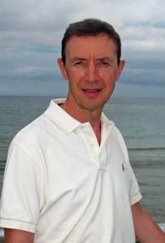 | University of Girona "On the Social Organization of the Commons - An Analytical Framework" TUE November 10 |
| 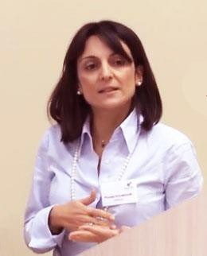 | Athens University of Economics and Business "Managing Transboundary Waters under Climate Uncertainty" TUE November 24 |
| 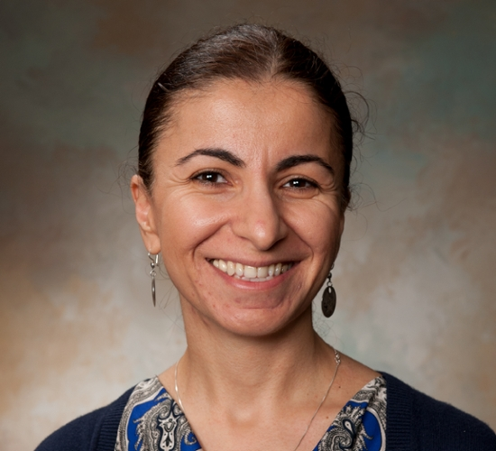 | Texas A&M University at Galveston "What Drives Voluntary Buyouts of Floodplain Properties: Empirical Evidence from U.S. Counties" TUE December 8 |
| 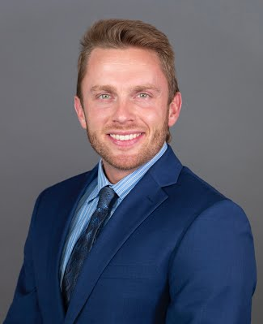 | University of Chicago "The Texas Grand Slam: Robbed by Red Tides?" TUE December 22 |
| 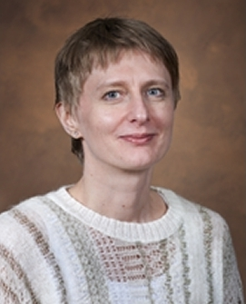 | University of Florida "Water Supply Planning in the U.S. Third Most Populous State - Florida " TUE January 5 |
| 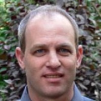 | Hebrew University of Jerusalem "Large-Scale Desalination and the External Impact on Irrigation-Water Salinity: Economic Analysis for the Case of Israel" TUE January 19 |
| 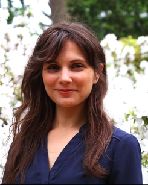 | Temple University "The Local Benefits of Federal Mandates: Evidence from the Clean Water Act" TUE February 2 |
International Food Policy Research Institute (IFPRI) "Irrigation-Nutrition Linkages in Sub-Saharan Africa: Lessons from small scale irrigations in Ethiopia, Ghana, and Tanzania" TUE October 27 |
|
| 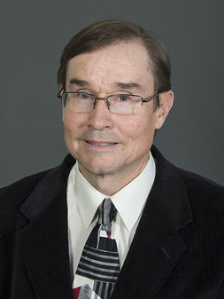 | West Virginia University "The Impact of Public Water Supply Unreliability on Residential Property Prices in Marion County, West Virginia" (with Fahad Alzahrani) TUE October 13 |
| 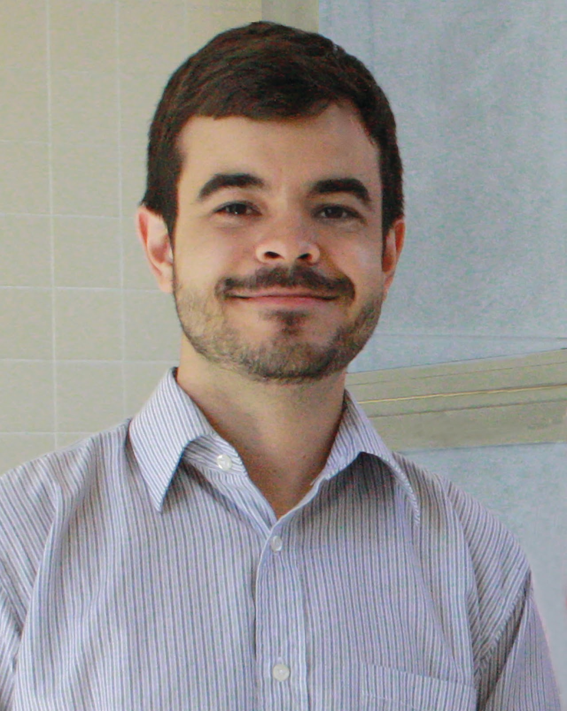 | Cornell University "Water Affordability in the United States" (with Casey Wichman) TUE September 29 |
| 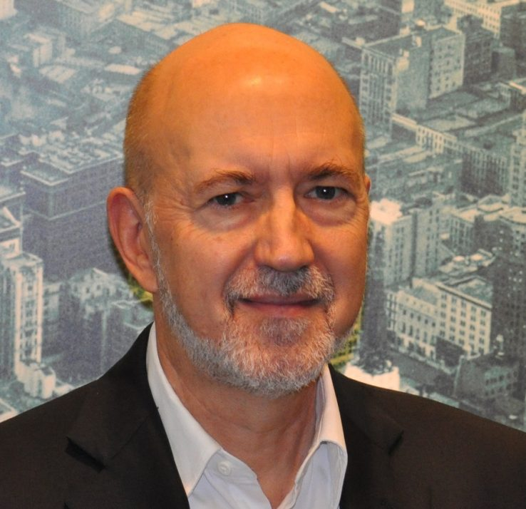 | University of North Carolina at Chapel Hill "Higher than you think: the Invisible Costs of Water and Sanitation Services Embedded in Housing" (Download paper) TUE September 15 |
| 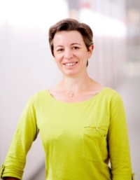 | Toulouse School of Economics "Social Norms Information Treatments in the Municipal Water Supply Sector" (with Dale Whittington) TUE June 30 |
Technical University of Munich "Agricultural Productivity and Weather Variability: A Study of Small Irrigation Development Program in Ethiopia" (with Marup Md. Hossain and Alessandra Garbero) TUE June 23 |
|
| 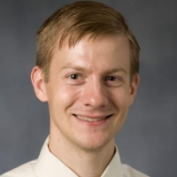 | Duke University "The Economic Impacts of Large-Scale Water Infrastructure Improvements in Urban Zarqa, Jordan" (with Jennifer Orgill and Seth Morgan) TUE June 16 |
| 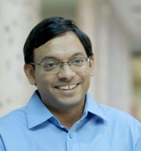 | University of Chicago "Rationing the Commons" (with Nicholas Ryan) TUE June 9 |
| 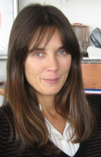 | University of Oviedo "Do Households Have Enough Information for Adequate Decision-Making in the Water Sector? A Case Study in Spain" (with Marta Suárez-Varela and Roberto Martínez-Espiñeira) TUE June 2 |
| 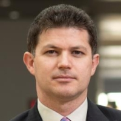 | Free University of Bozen-Bolzano "Water Tariffs and Consumers' Inaction" (with Carmine Ornaghi) TUE May 26 |
| 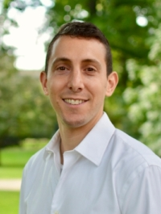 | Pennsylvania State University "Do Nonlinear Prices Work? Distributional and Conservation Consequences of Budget-Based Water Rates" (with Casey Wichman and Derek Wietelman) TUE May 19 |
| 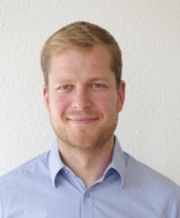 | University of Kassel "Do International Agreements Improve Water Quality in Rivers?" TUE May 12 |
| 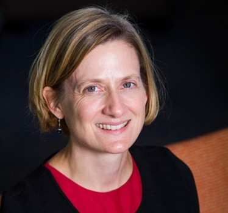 | University of Texas at Austin "The Value of Water Quality: Estimating Amenity and Recreational Benefits" (with Yusuke Kuwayama and Jiameng Zheng) WED May 6 |
| 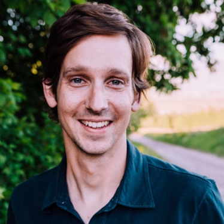 | North Carolina State University "Global Groundwater Governance: Economic Framework and Cross-Country Comparison" (with Todd Guilfoos) TUE April 28 |